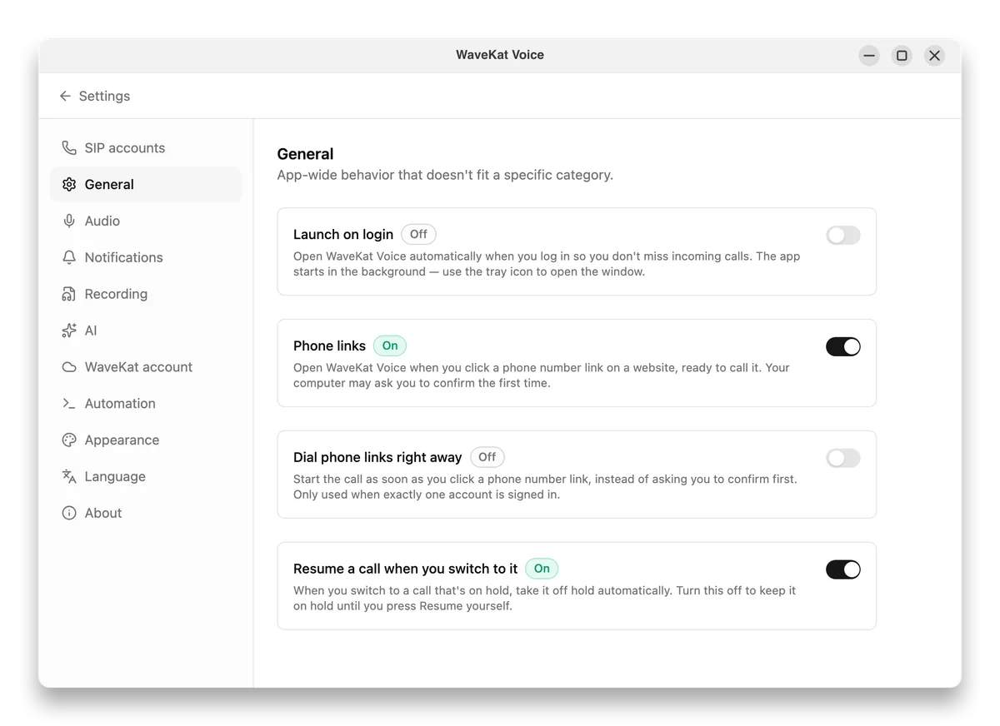
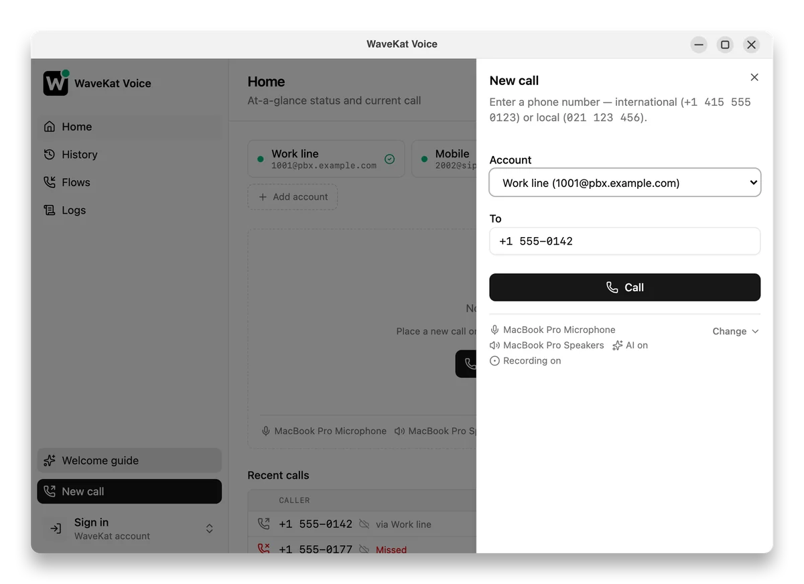

+1 (415) 555-0123 → dial screen → call connects, audible ring. Keep it under 5 s.VO from ~0:08“Same web page. Same phone number. Same click. On the phone, it rings. On the computer… nothing. … The reason fits in one sentence, and it's kind of great.”
Whatever sits in that slot gets the number.
That slot is the entire story.
It rings. Every time.
It never has to ask. That's why you've never thought about this.
Offers to call through your iPhone — if you have one, nearby, set up for it.
Almost never what you wanted at a desk.
“How do you want to open this?” — with a list that's usually empty too.
The click just… evaporates.
VO over this shot“So the link was never broken.” — then cut to the next slide as the VO reaches “The website did its job.”
The link was never broken.
The website did its job. The browser did its job.
The system knocked on the phone app's door.
There was just nobody home.
VO over this shot“…there's one switch: Phone links. It ships off. On purpose… Flip it, and WaveKat Voice steps into the slot.”

settings-general-phone-links. Drop this in if the take fails.+1 (415) 555-0123.VO over this shot“Nobody copied anything. Nobody retyped a country code. You look at the number… and you press Call. It shipped in version 0.0.43.”

dial-prefilled. The script's named fallback still.Can a web page phone someone
from my computer?
No. A link can only ask.
The number is filled in. A human presses Call.
wavekat.com